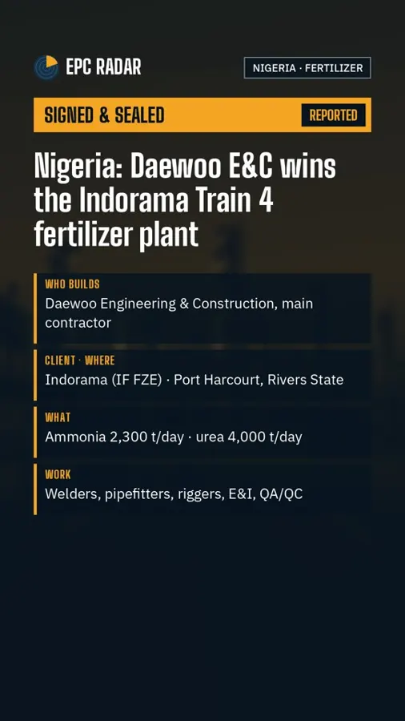

REPORTEDSigned & SealedNigeria · Port Harcourt · Fertilizer · 4 Nov 2026
Daewoo E&C wins Indorama's Train 4 fertilizer plant in Nigeria
Daewoo Engineering & Construction said on 4 November that it received a letter of award from Indorama's Nigerian unit IF FZE for the Indorama Fertilizer Train 4 project, worth about 350 billion won, as reported by Korean press.
Contractor
Daewoo E&C
Main contractor. Built Trains 1 to 3 at the same complex; Train 3 was completed on 30 May 2026.
Client
Indorama (IF FZE)
Letter of award received by Daewoo, per its statement.
Capacity
Ammonia 2,300 t/day
Urea 4,000 t/day and urea crystal 4,000 t/day.
Value
About 350 bn won
As reported by Korean press from the company statement. We do not convert it.
Read the full storyHide the full story
What we know
The plant will be built in Port Harcourt, Rivers State. Press reports say the complex's yearly urea capacity would rise from 4.2 to 5.6 million tonnes. We did not find the filing itself, so the level is REPORTED, not CONFIRMED.
What it means for work
A fertilizer train of this size needs welders, pipefitters, riggers, E&I and QA/QC crews. We found no Daewoo E&C site adverts for this project yet; we will add them when they appear.
We never ask for money for jobs.